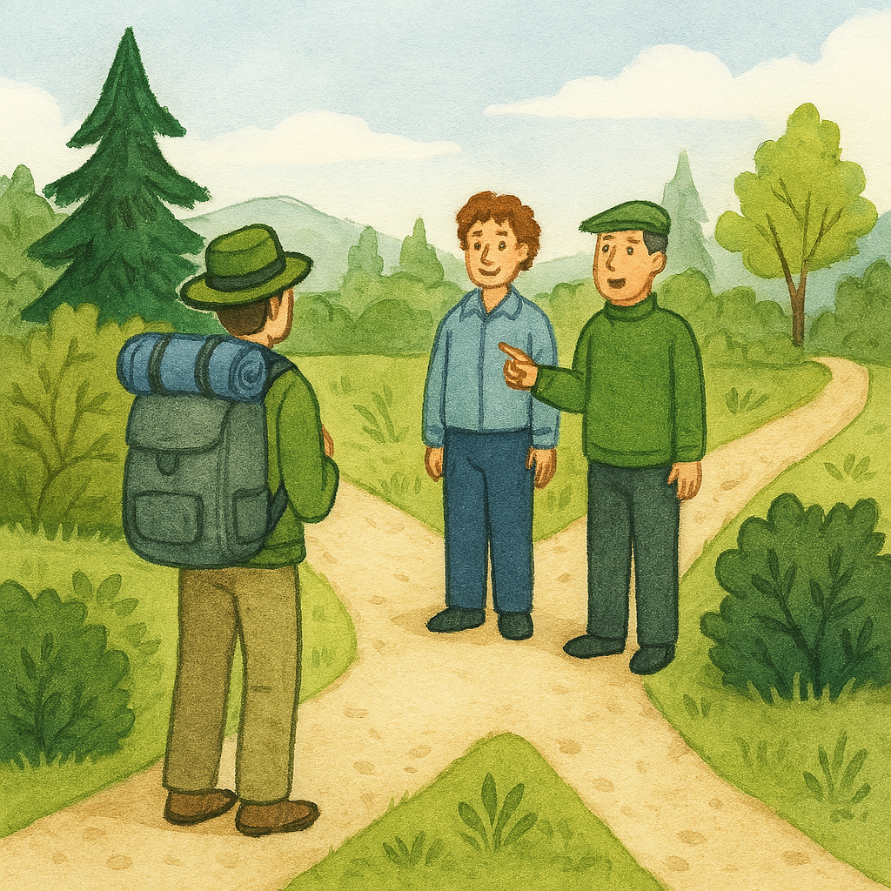
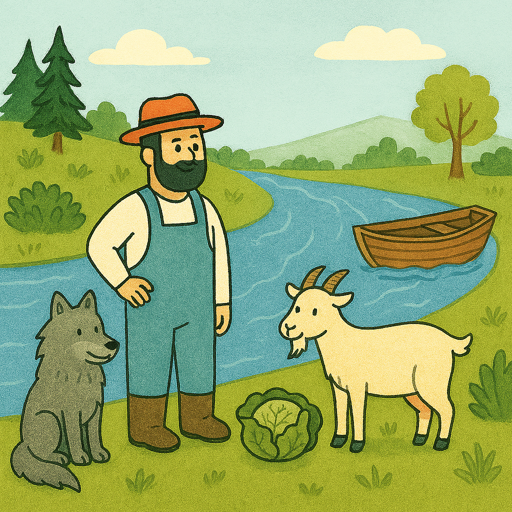

My Reflection
Overall Reflection
This unit was more focused on first order logic (FOL), which I now understand that it extends beyond
propositional logic (PL), introduced in the previous unit, by adding predicates
and quantifiers. Predicates allow to define the relationship between objects in the logical statements, eg.
"Father(Hassan, Hussam)" means that Hassan is the father of Hussam,
while the second is quantifiers allow to express whether the statements apply to all objects or some objects in
the domain. The universal quantifier (∀) indicates
that the statement applies to all objects, while the existential quantifier (∃) indicates that the statement
applies to at least one object. eg.
∀x (Person(x) → Mortal(x)) means "All persons are mortal." Meanwhile, ∃x (Person(x) → Mortal(x)) means "There
exists at least one person who is mortal."
According to Sharma et al. (2025), PL and FOL allows to think about and represent knowledge in two different
ways. PL models the world in a binary way, where
statements are either true or false, which is known as factored representation. Meanwhile, FOL further
represents the quantities and relations between objects,
which is also called structured representation, which is more expressive and closer to the way humans think and
reason about the world.
Reflection on My Understanding and Activities of the Week
In this week, I watched the recording of the week's seminar, finished the lecturecast, and two readings,
including one from the text book (Brachman and Levesque, 2004).
However, I did not really understand what FOL is until I had to solve the excercises of the formative
activities, which were from the unit's readings.
For these excercises, I had to search and get assistance from Copilot to let it explain to me the excercises
step by step, and clarify things that were not initially
clear to me. This helped me to understand FOL better, and I was able to complete the excercises successfully. My
answers for the excercises are presented in the artefacts
section below.
Additionally, the unit included creating a final post for the collaborative learning discussion that we started
in Unit 1, summarising the responses the I got from my peers
on my initial post. But since I have recieved one response only, I will postponed the final post until the next
week. Hopefully, I will get more responses by then.
On a last note, through the readings and the excercises, I kept trying to reflect on the connection between FOL,
and KRR in general, and my work as a data practitioner.
In an attempt to establish this connection, I reflected on the barber's paradox, especially on the recursion
side of it, and how it relates to a challenge
that I faced at work, and I wrote this as a LinkedIn post, which is also presented below as a final artefact.
Artefacts
Activity 1
The following are my responses to two excercises presented by Brachman and Levesque (2004). Namely, they are the
well known Barber's Paradox and a variant of
the traveller
and the two inhabitants puzzle.
Chapter 2 Question 4 - The barber's paradox
Problem:
In a certain town, there are the following regulations concerning the town barber:
- Anyone who does not shave himself must be shaved by the barber.
- Whomever the barber shaves, must not shave himself.
Answer:
This is called the Barber’s Paradox, formulated by Bertrand Russell, which is a self-referential puzzle that
exposes
the limits of naïve set definitions and leads to inconsistency in first-order logic (FOL).
Setup
- Regulation 1: If a person does not shave himself, then the barber shaves him.
- Regulation 2: If the barber shaves a person, then that person does not shave himself.
- Since the barber lives in the same town, the barber is subject to the same regulations, too.
Expression in FOL
In FOL, we express “x shaves y” as Shaves(x, y).
Let b be the barber.
Therefore, the regulations can be formulated as:
- Regulation 1: For all x, if ¬Shaves(x, x), then Shaves(b, x)
∀x [ ¬Shaves(x, x) → Shaves(b, x) ]
- Regulation 2: For all x, if Shaves(b, x), then ¬Shaves(x, x)
∀x [ Shaves(b, x) → ¬Shaves(x, x) ]
If we apply the same regulations to the barber, that is letting x = b, then the regulations would be as follows:
-
Regulation 1: If ¬Shaves(b, b), then Shaves(b, b)
¬Shaves(b, b) → Shaves(b, b)
If the barber does not shave himself, then he must shave himself, which is a contradiction.
-
Regulation 2: If Shaves(b, b), then ¬Shaves(b, b)
Shaves(b, b) → ¬Shaves(b, b)
If the barber does shave himself, then he must not shave himself, which is also a contradiction.
Conclusion:
In knowledge representation, the paradox shows the danger of unrestricted self-reference and the importance of
carefully defining domains and constraints.
Chapter 3 Question 4 - A Canadian variant of an old puzzle

(a) FOL Sentences
-
One of Henri or Pierre is a truth teller, and one is not.
(truth-teller(henri) ∧ ¬truth-teller(pierre)) ∨ (¬truth-teller(henri) ∧ truth-teller(pierre))
-
An inhabitant will answer yes to a question if and only if he is a truth teller and the correct answer is yes,
or he
is not a truth teller and the correct answer is not yes.
∀x ∀q (answer-yes(x, q) ↔ ((truth-teller(x) ↔ true(q)) ∨ (¬truth-teller(x) ↔ true(q))) )
-
The gauche question is true iff the correct direction is left.
true(gauche) ↔ Go-left
-
dit-oui(x,q) question is true iff x would answer yes to q.
∀x ∀q (true(dit-oui(x, q)) ↔ answer-yes(x, q))
-
A
dit-non(x,q) question is true iff x would not answer yes to q.
∀x ∀q (true(dit-non(x, q)) ↔ ¬answer-yes(x, q))
(b) Ground Term
The traveler should ask Henri, “would you say yes if I asked you whether you would say yes to ‘Is left the
correct
direction?’”
This can be expressed as:
t = dit-oui(henri, dit-oui(henri, gauche))
Whether Henri is a truth-teller or a liar, his answer to this question will be “yes” if and only if the correct
direction is left. This is because the nested structure neutralises the deception.
(c) KB does not entail which direction to go
The knowledge base (KB) does not entail which direction to go, but it helps formulate the right question to
neutralise
whether Henri is a liar or not.
This can be seen as the following table shows that regardless of whether Henri is a liar or not, using the
question
above, the traveler can depend on his answer:
| State |
First Answer |
Second Answer |
Correct Direction |
| Truth teller |
Yes |
Yes |
Left |
| Liar |
Yes |
No |
Left |
| Truth teller |
No |
No |
Not left |
| Liar |
No |
Yes |
Not left |
Artefacts
Activity 2
The excercise of this activity was to solve the classic "river crossing" puzzle
(aka wolf, goat and cabbage problem) using first order logic (FOL) statements, which was a bit different than
the excercises above, because it included state-space
representation. Here is my solution:

The solution to the classic river crossing puzzle using first order logic (FOL) statements and state-space
representation:
| Step |
Action |
State |
Positions |
Safe? |
| Initial |
— |
s0 |
At(farmer, left, s0)
At(goat, left, s0)
At(wolf, left, s0)
At(cabbage, left, s0)
|
Safe(s0) |
| 1 |
Move([farmer, goat], s0, s1) |
s1 |
At(farmer, right, s1)
At(goat, right, s1)
At(wolf, left, s1)
At(cabbage, left, s1)
|
Safe(s1) |
| 2 |
Move([farmer], s1, s2) |
s2 |
At(farmer, left, s2)
At(goat, right, s2)
At(wolf, left, s2)
At(cabbage, left, s2)
|
Safe(s2) |
| 3 |
Move([farmer, wolf], s2, s3) |
s3 |
At(farmer, right, s3)
At(goat, right, s3)
At(wolf, right, s3)
At(cabbage, left, s3)
|
Safe(s3) |
| 4 |
Move([farmer, goat], s3, s4) |
s4 |
At(farmer, left, s4)
At(goat, left, s4)
At(wolf, right, s4)
At(cabbage, left, s4)
|
Safe(s4) |
| 5 |
Move([farmer, cabbage], s4, s5) |
s5 |
At(farmer, right, s5)
At(goat, left, s5)
At(wolf, right, s5)
At(cabbage, right, s5)
|
Safe(s5) |
| 6 |
Move([farmer], s5, s6) |
s6 |
At(farmer, left, s6)
At(goat, left, s6)
At(wolf, right, s6)
At(cabbage, right, s6)
|
Safe(s6) |
| 7 (Final) |
Move([farmer, goat], s6, s7) |
s7 |
At(farmer, right, s7)
At(goat, right, s7)
At(wolf, right, s7)
At(cabbage, right, s7)
|
Safe(s7) |
Final state: All are safe and have crossed to the other side.
Artefacts
LinkedIn Post
As an attempt to connect what I am learning, especially in this module to what I exprience, I created a LinkedIn
post,
reflecting on the connection between the barber's paradox, recursion and a DAX challenge I recently faced at
work.
References
Brachman, R.J. and Levesque, H.J. (2009) Knowledge representation and reasoning. Elsevier.
Sharma, N. et al. (2025) ‘First Order Logic’, in Introduction to Artificial Intelligence. UC Berkeley.
Available at: https://inst.eecs.berkeley.edu/~cs188/textbook/logic/first-order-logic.html (Accessed: 8 November
2025).